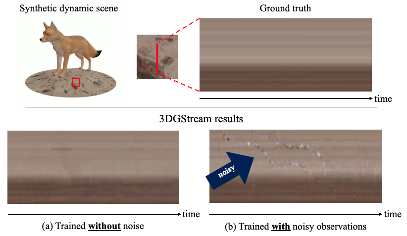
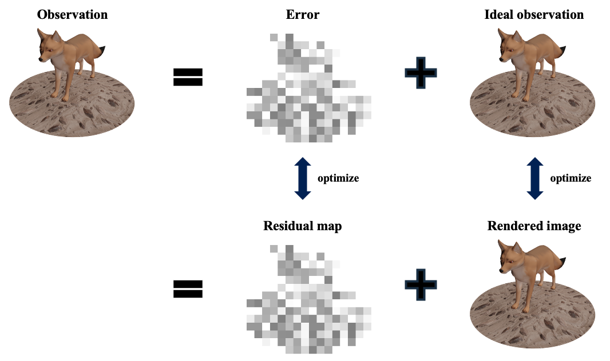
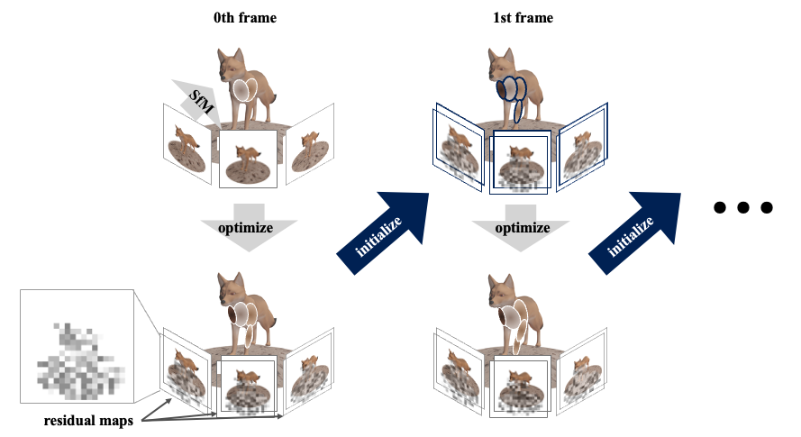
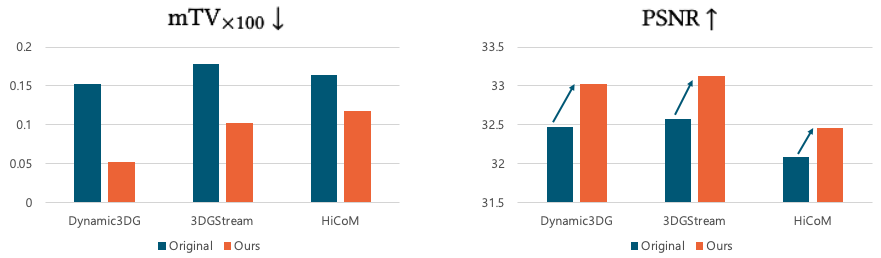
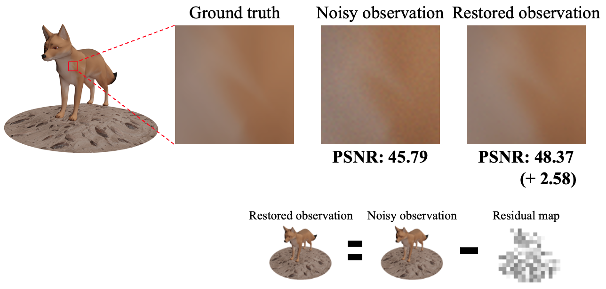

We reveal that existing online reconstruction of dynamic scenes with 3D Gaussian Splatting produces temporally inconsistent results, led by inevitable noise in real-world recordings.
To address this, we decompose the rendered images into the ideal signal and the errors during optimization, achieving temporally consistent results across various baselines.
Problem Statement
The observations are different between adjacent frames, even in static regions.
These differences are inevitable due to sensor noises and other reasons. Such noise harms temporal consistency.
To support the problem statement, we conducted a toy experiment, reconstructing a synthetic scene with and without noise.

While the results from ground truth observations are mostly clear, the results from noisy observation exhibit flickering artifacts over time.
Method

We model an observation as a combination of the ideal observation and the learnable residual map.

Then we jointly optimize the Gaussians and the residual maps, following the online reconstruction pipeline.
Evaluation
To measure temporal consistency, we calculate the total variation in the static region, denoted as mTV.
For readability, we multiply mTV by 100 and refer to it as mTV\(_{\times 100} \).

Our method greatly enhances temporal consistency and improves the PSNR of the baselines.
Visual Comparisons
Please move the slider in the center to compare the videos.
Spiral Rendering at a Specific Time
Please note that in 3D Gaussian Splatting, some results bear view inconsistency due to popping artifacts.
Analysis
Visualizing the Learned Residual Map
Restoration

We restore the train view observation to its ground truth by subtracting the learned residual map from the corresponding observation, indicating that the residual successfully captures the noise of the observation.
Limitation
Please note that all the baselines fails in MeetRoom dataset.
Existing baselines struggle under challenging conditions. As these failures arise from problem settings that are orthogonal to our temporal consistency objective, our method does not resolve these failures.
Moreover, since our method assumes well-reconstructed scenes, its effectiveness decreases when the baseline fails.
However, our method will remain effective in improving temporal consistency when integrated with future work that improves upon these baselines.